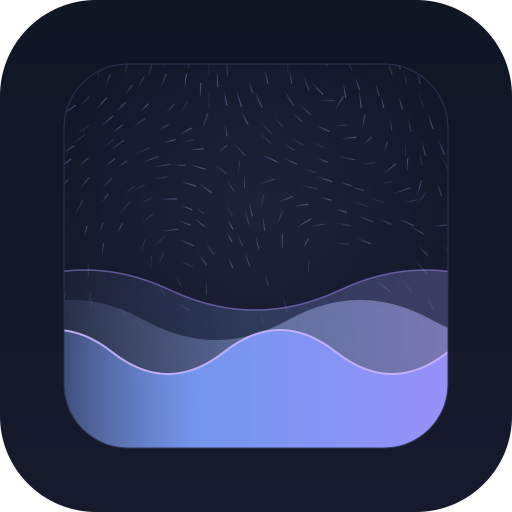
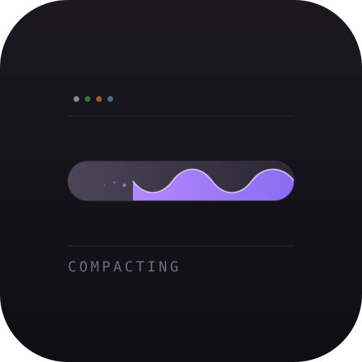
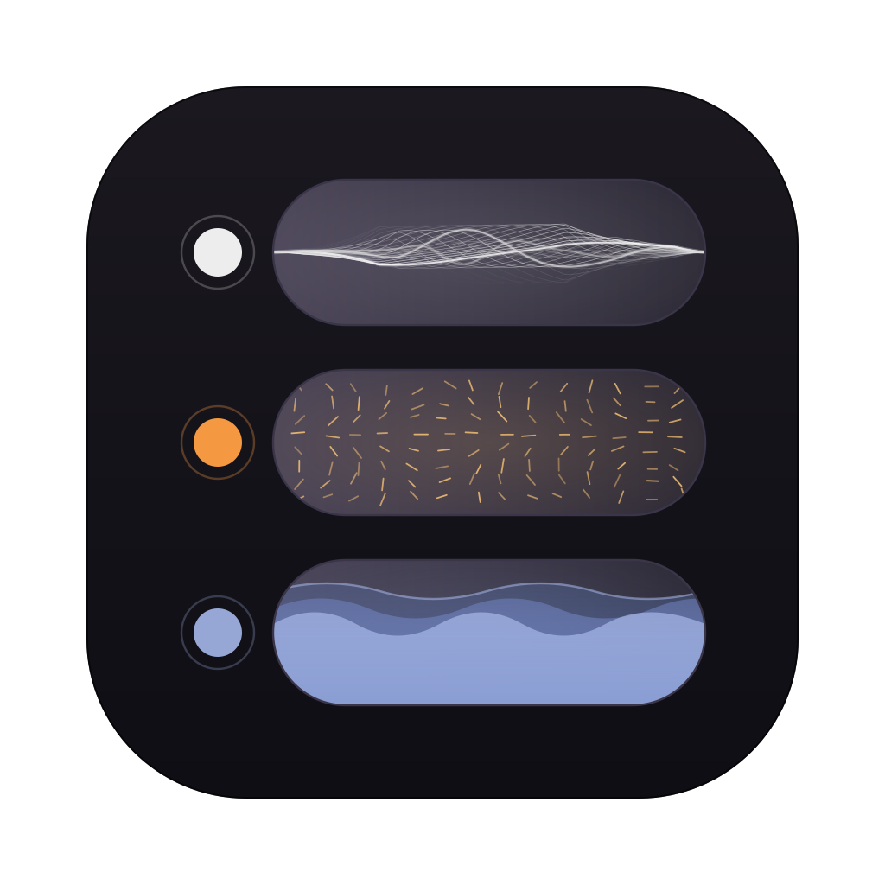
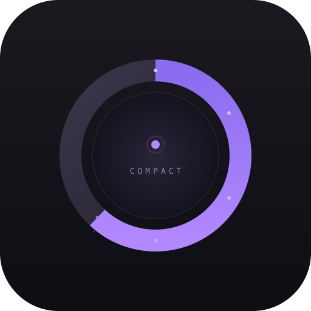
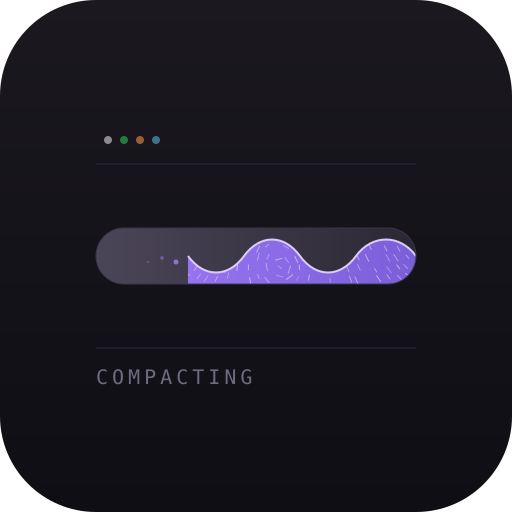
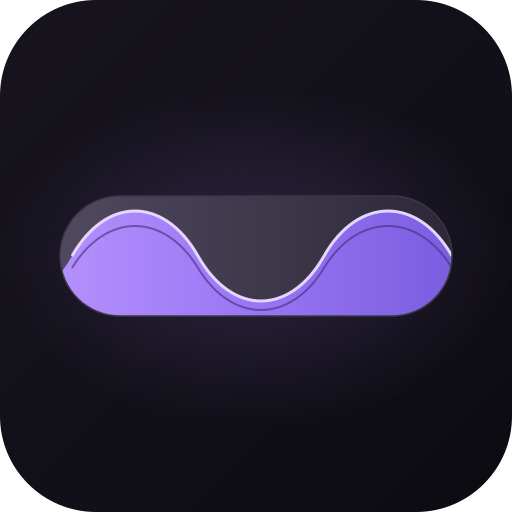

02
Parallax Wave + Flux
Three phase-offset wave layers, with the curl-noise streamline field humming quietly in the sky behind them. The flux thins as it approaches the crest so it reads as atmosphere, not competing detail.

04a
Original
The baseline: capsule bar with a violet wave eating it right-to-left, tiny state dots above, "COMPACTING" label below.

04b
Stacked Sessions
Three live session rows filling the canvas — compacting wave, thinking flux, working waveform — each fronted by its status dot. No text. Reads as a mini-dashboard of the running app.

04c
Radial Gauge
The capsule curled into a ring — clock-like, the violet wave arc advancing around a dark core. A single session dot sits in the middle. More "app icon" than "data viz."

04d
Flux-Infused Gauge
The gauge, but the violet fill is alive — the curl streamline field running through it. Pulls the two surviving concepts into one mark: a wave that carries flux.

04e
Maximal Capsule
Same gauge, stripped to essentials: no dots, no label, no hairlines. The capsule scaled up to fill the tile, with a richer gradient and a deeper crest shadow. This is the version that survives at 32×32.
